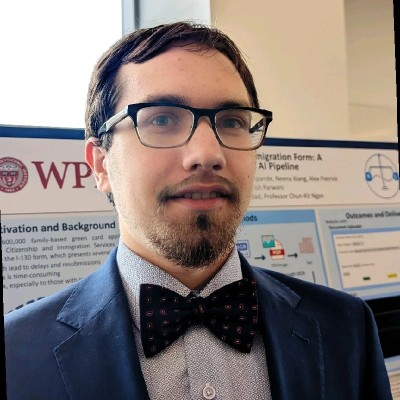

I am a PhD student at WPI studying data science and robustness in AI. My current work focuses on making LLMs more robust against different perturbations and prompt styles, and improving uncertainty estimation for language models. My published work focuses on assessing the robustness of U.S. strategic highways and understanding how natural disasters, such as wildfires, impact critical transportation networks.
PhD in Data Science | 2025 – Present
Advisor: Walter Gerych
Research focus: LLM debiasing, robustness of AI models, uncertainty estimation
Master of Science in Artificial Intelligence | 2024 – 2025
Bachelor of Science in Computer Science | 2021 – 2024
Sukhwan Chung, Daniel Sardak, Maksim Kitsak, Andrew Jin, Igor Linkov
Transportation Research Interdisciplinary Perspectives · July 2025
Military logistics rely heavily on public infrastructure, such as highways and railways, to transport troops, equipment, and supplies, linking critical installations through the Department of Defense’s Strategic Highway Network and Strategic Rail Corridor Network. However, these networks are vulnerable to disruptions that can jeopardize operational readiness, particularly in contested environments where adversaries employ non-traditional threats to disrupt logistics, even within the homeland. This paper presents a contested logistics model that utilizes network science and Geographic Information System (GIS) to evaluate the robustness and resilience of strategic transportation networks under various disruption scenarios. By integrating GIS data to model logistics networks, simulating disruptions, and quantifying their impacts, we identified vulnerabilities in US power projection routes and assessed the resilience and robustness of highways and railways. Our findings reveal that highways are more resilient than railways, with greater capacity to absorb targeted disruptions.. These findings underscore the importance of prioritizing investments in highway infrastructure and reinforcing vulnerable road and rail segments, particularly in high-risk regions, to enhance the resilience of military logistics and maintain operational effectiveness in contested conditions.
Sukhwan Chung, Daniel Sardak, Jeffrey Cegan, Igor Linkov
Transportation Research Record · 2025
Network science is a powerful tool for analyzing transportation networks, offering insights into their structures and enabling the quantification of resilience and robustness. Understanding the underlying structures of transportation networks is crucial for effective infrastructure planning and maintenance. In military contexts, network science is valuable for analyzing logistics networks, critical for the movement and supply of troops and equipment. The U.S. Army’s logistical success, particularly in the “fort-to-port” phase, relies heavily on the Strategic Highway Network (STRAHNET) in the U.S., which is a system of public highways crucial for military deployments. However, the shared nature of these networks with civilian users introduces unique challenges, including vulnerabilities to cyberattacks and physical sabotage, which is highlighted by the concept of contested logistics. This paper proposes a method that uses network science and geographic information systems (GIS) to assess the robustness and resilience of transportation networks, specifically applied to military logistics. Our findings indicate that, while the STRAHNET is robust against targeted disruptions, it is more resilient to random disruptions.
Developed a framework to reduce bias in LLMs caused by dialectal variation (e.g., African American English, Gen Z slang), finding that models perform significantly worse on non-standard inputs. The system uses lightweight error prediction combined with Author Obfuscation techniques (paraphrasing, back-translation, standardization) to normalize text style before inference, with paraphrasing achieving an average accuracy improvement of 34%.
Developed a vision-powered water tower detection system using YOLOv8 and OpenCV to identify water towers in satellite imagery. Built a custom training pipeline with a hand-labeled dataset of aerial photos, then fine-tuned the model to handle variations in scale, lighting, and viewing angle. Integrated OpenCV preprocessing to improve detection accuracy on noisy or low-contrast images.
Analyzed bias of several text-to-image models using a combination of no-reference automatic image quality metrics and human-annotated scores. We analyzed images of objects in different continents (for example wedding dress in Africa). Our results showed a disparity between the automatic and human metrics - while the human metrics indicated that typically more underrepresented regions tended to feature more stereotypical images, the automatic metrics gave them higher quality scores.
Developed an assistive OCR system designed to help visually impaired and disabled individuals read printed text through a portable Raspberry Pi device. Built the pipeline around Tesseract OCR with OpenCV-based preprocessing (deskewing, adaptive thresholding, and noise reduction) to improve recognition on low-quality camera captures. Experimented with reducing model parameters and tuning inference settings to achieve real-time performance on resource-constrained hardware, and integrated text-to-speech output so recognized text could be read aloud to the user.
Developed a RAG-powered immigration form filler using Mistral and Haystack. Features an end-to-end RAG pipeline with a chatbot interface for document upload and user information collection.
Implemented a Rainbow DQN agent with reward shaping techniques. Trained PPO and A2C agents achieving scores of 2,200+.
Created an LLM-powered database assistant using GPT-3.5-turbo that converts natural language queries into SQL. Includes a chatbot interface for database interaction.
Email: dansardak@gmail.com
Phone: 617-233-5788
LinkedIn: Daniel Sardak
GitHub: dansardak
ORCID: 0009-0006-3110-7400